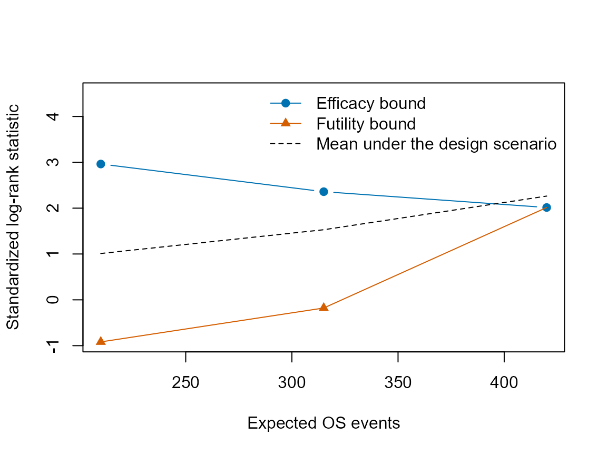
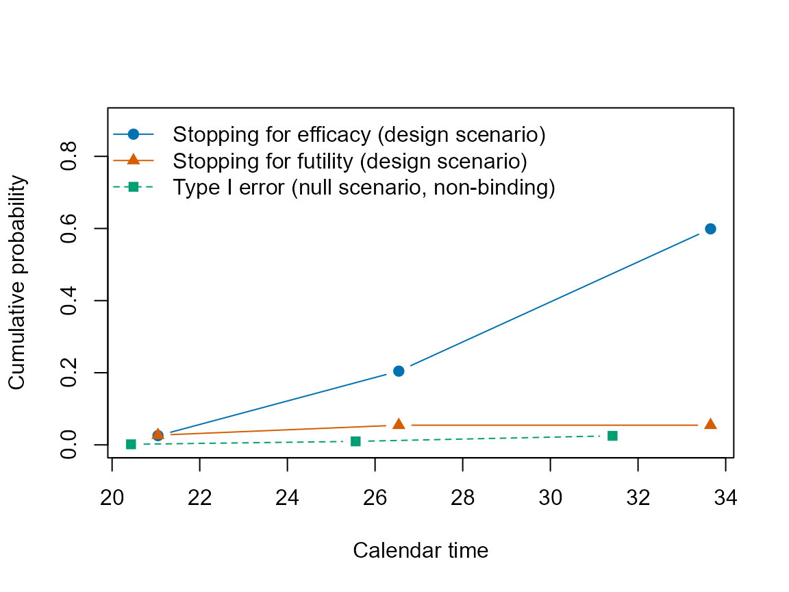

Group sequential designs and the covariance of the statistics
Source:vignettes/group-sequential.Rmd
group-sequential.RmdThis article describes the choices of ms_looks() and
ms_test(): when the analyses take place, how the efficacy
and futility bounds are obtained, and which approximation of the
distribution of the log-rank statistics is used. It also shows the
expected duration, events and sample size of a design that stops at its
bounds, the conditional power at an interim analysis and the plots of a
design. The scenario is the delayed treatment effect of the introductory
article: the control group has exponential survival with a median of 12
months, the hazard ratio is 1 for 6 months and 0.65 afterwards, and 700
patients are enrolled at 10 per month for 3 months and at 30 per month
afterwards.
lam <- log(2) / 12
scn <- ms_scenario(ms_model(death = lam, dropout = 0.003),
ms_model(time = c(0, 6), death = c(lam, 0.65 * lam), dropout = 0.003),
accrual = ms_accrual(time = c(0, 3), rate = c(10, 30)))
cols <- c("time", "events", "info_frac", "z_upper", "hr_upper", "cum_power")Timing of the analyses
Event-driven analyses take place when the expected number of events reaches given fractions of the final number. Here the final analysis is at 420 deaths with interim analyses at 50 and 75 percent:
lk <- ms_looks("os", fraction = c(0.5, 0.75, 1))
pw <- ms_power(scn, n = 700, looks = lk, test = ms_test(), events = 420)
pw$looks[, cols]
#> time events info_frac z_upper hr_upper cum_power
#> 1 21.04696 210 0.50 2.962588 0.6643966 0.02547217
#> 2 26.54149 315 0.75 2.359018 0.7665685 0.20443870
#> 3 33.65519 420 1.00 2.014084 0.8215566 0.59987406The final analysis takes place at month 33.7 and the power is 0.600. Analyses can also take place at calendar times; the numbers of events then follow from the scenario:
pw_cal <- ms_power(scn, n = 700, looks = ms_looks("calendar", time = c(24, 30, 40)),
test = ms_test())
pw_cal$looks[, cols]
#> time events info_frac z_upper hr_upper cum_power
#> 1 24 265.4558 0.5481384 2.811391 0.7081438 0.06400955
#> 2 30 372.0239 0.7681905 2.334752 0.7849818 0.32730349
#> 3 40 484.2860 1.0000000 2.020051 0.8322797 0.76363722At the calendar times 24, 30 and 40 months, 265, 372 and 484 deaths
are expected and the power is 0.764. The final analysis can also be
placed at a given time after the end of accrual with
followup in ms_power(), and the looks can mix
triggers, for example an interim analysis at a calendar time and a final
analysis driven by events (see ?ms_looks).
Spending functions and efficacy bounds
The efficacy bounds come from alpha spending (Lan and DeMets 1983)
with the event fractions as the spending time. gs_spend()
gives the cumulative alpha and gs_bounds() the bounds:
t3 <- c(1 / 3, 2 / 3, 1)
spent <- rbind(OF = gs_spend(t3, type = "OF"),
Pocock = gs_spend(t3, type = "Pocock"),
HSD_minus4 = gs_spend(t3, type = "HSD", param = -4))
round(spent, 5)
#> [,1] [,2] [,3]
#> OF 0.00010 0.00605 0.025
#> Pocock 0.01132 0.01908 0.025
#> HSD_minus4 0.00130 0.00625 0.025
bounds <- rbind(OF = gs_bounds(t3)$upper,
Pocock = gs_bounds(t3, sf_eff = "Pocock")$upper,
HSD_minus4 = gs_bounds(t3, sf_eff = "HSD", param_eff = -4)$upper)
round(bounds, 3)
#> [,1] [,2] [,3]
#> OF 3.710 2.511 1.993
#> Pocock 2.279 2.295 2.296
#> HSD_minus4 3.011 2.547 1.999With spending_time = "information" in
ms_test(), the spending time is the information fraction
under the design scenario. With the delayed effect the two fractions
differ at the interim analyses:
pw_info <- ms_power(scn, n = 700, looks = lk,
test = ms_test(spending_time = "information"), events = 420)
rbind(event_fraction = pw$looks$z_upper, information_fraction = pw_info$looks$z_upper)
#> [,1] [,2] [,3]
#> event_fraction 2.962588 2.359018 2.014084
#> information_fraction 2.957172 2.356168 2.014980Futility bounds
Futility bounds can be fixed, on the Z scale or on the hazard ratio
scale, or obtained by beta spending under the design scenario. With
binding = FALSE (the default) the efficacy bounds ignore
the futility bounds, and the type I error is given with and without
them:
tests <- list(
fixed_hr = ms_test(futility = "fixed", fut_bound = c(1, 1), fut_scale = "hr",
binding = TRUE),
beta_nonbinding = ms_test(futility = "beta", sf_fut = "HSD", param_fut = -2),
beta_binding = ms_test(futility = "beta", sf_fut = "HSD", param_fut = -2,
binding = TRUE))
fut <- lapply(tests, function(te) ms_power(scn, n = 700, looks = lk, test = te,
events = 420))
t(sapply(fut, function(x) c(power = x$power, x$type1)))
#> power nonbinding binding
#> fixed_hr 0.5800075 0.02524940 0.02500000
#> beta_nonbinding 0.5989927 0.02500000 0.02499559
#> beta_binding 0.5990285 0.02500441 0.02500000
fut$beta_nonbinding$looks[, c("time", "z_upper", "z_lower", "hr_lower", "prob_lower")]
#> time z_upper z_lower hr_lower prob_lower
#> 1 21.04696 2.962588 -0.9178979 1.1350559 0.02689414
#> 2 26.54149 2.359018 -0.1784277 1.0203100 0.02760043
#> 3 33.65519 2.014084 2.0140837 0.8215566 0.34651269The fixed bound stops the trial at an interim analysis when the estimated hazard ratio exceeds 1. Its power is 0.580, against 0.600 without futility bounds: with a delayed effect, the early hazard ratio is close to 1, and the trial stops for futility at one of the interim analyses with probability 0.168.
Expected duration, events and sample size
The power and the type I error do not depend on whether the trial
stops at an interim analysis, but the duration of the trial and the
numbers of events and enrolled patients do. For a design with one
endpoint, ms_power() and ms_size() give in
expected the expected values when the trial stops at the
first bound that it crosses, under the design scenario and under the
null scenario, and summary() prints them. For the design
with the non-binding futility bounds by beta spending of the previous
section:
des_nb <- fut$beta_nonbinding
des_nb$expected
#> hypothesis prob_efficacy_early prob_futility_early study_duration events
#> 1 design 0.204438585 0.05449458 31.52549 387.3136
#> 2 null 0.009649324 0.44062691 27.85223 353.7305
#> enrolled
#> 1 693.2661
#> 2 673.4042
ex_d <- des_nb$expected[des_nb$expected$hypothesis == "design", ]
ex_0 <- des_nb$expected[des_nb$expected$hypothesis == "null", ]Under the design scenario the trial stops at an interim analysis for
efficacy with probability 0.204 and for futility with probability 0.054,
and its expected duration is 31.5 months, against 33.7 months to the
final analysis. Under the null scenario the expected duration is 27.9
months with 354 expected deaths. The trial is taken to stop also at the
non-binding futility bounds, as in gsDesign; the expected values without
stopping for futility are those of the same design with
futility = "none". The analysis times are those at which
the expected events reach their targets, so that the variability of the
analysis times is ignored, as in rpact and lrstat (see
?ms_power); vignette("validation") compares
the expected values with patient-level simulations.
plot() draws the bounds of a design with one endpoint
against the expected events or the calendar time
(x_axis = "time"), on the scale of the statistic with its
mean under the design scenario, of the hazard ratio
(scale = "hr") or of the nominal p-value
(scale = "p"):
plot(des_nb, type = "bounds")
With type = "power" it draws the cumulative
probabilities of stopping for efficacy and for futility under the design
scenario and the cumulative type I error:
plot(des_nb, type = "power", x_axis = "time")
Each call returns the plotted values invisibly.
Conditional power at an interim analysis
At an interim analysis, ms_cond_power() gives the
probability that the trial crosses an efficacy bound at a later
analysis, given the observed statistic, before it crosses a futility
bound (as gsCP() of gsDesign), and also the probability
without the futility bounds of the later interim analyses. The
distribution of the later statistics is chosen with under:
the design scenario ("design", the default), the null
hypothesis ("null", which gives the conditional type I
error), the current trend ("trend", a constant hazard ratio
estimated from the observed statistic), a given hazard ratio
("hr") or another scenario ("scenario"). With
the statistic 1.5 observed at the first interim analysis of the design
above (efficacy bound 2.963):
cp_trend <- ms_cond_power(des_nb, look = 1, z = 1.5, under = "trend")
cp_trend
#> Conditional power of a group sequential log-rank design
#> Observed at look 1: z = 1.5
#> Distribution: current trend (hazard ratio 0.813)
#> Conditional power: 0.5717
#> Without the futility bounds of the later interim looks: 0.5717
#> look time events z_upper z_lower cond_mean cond_sd prob_upper prob_lower
#> 2 26.54 315 2.359 -0.1784 1.837 0.5774 0.1830 0.0002406
#> 3 33.66 420 2.014 2.0141 2.121 0.7071 0.3887 0.4280503
#> cum_upper
#> 0.1830
#> 0.5717"trend" and "hr" assume proportional
hazards, whereas "design" and "scenario" use
the hazard ratio of a scenario over time, here 1 for 6 months and 0.65
afterwards. A scenario with the hazard ratio 0.8 after 6 months gives
the conditional power if the late effect is smaller than planned:
scn_small <- ms_scenario(ms_model(death = lam, dropout = 0.003),
ms_model(time = c(0, 6), death = c(lam, 0.8 * lam),
dropout = 0.003),
accrual = ms_accrual(time = c(0, 3), rate = c(10, 30)))
cp <- c(design = ms_cond_power(des_nb, look = 1, z = 1.5)$cond_power,
trend = cp_trend$cond_power,
hr_0.65 = ms_cond_power(des_nb, look = 1, z = 1.5, under = "hr",
hr = 0.65)$cond_power,
scenario_0.8 = ms_cond_power(des_nb, look = 1, z = 1.5, under = "scenario",
scenario = scn_small)$cond_power,
null = ms_cond_power(des_nb, look = 1, z = 1.5, under = "null")$cond_power)
round(cp, 3)
#> design trend hr_0.65 scenario_0.8 null
#> 0.803 0.572 0.963 0.418 0.097The conditional power is 0.803 under the design scenario, 0.572 under
the current trend (hazard ratio 0.813), 0.963 with the hazard ratio 0.65
for the events after the interim analysis, and 0.418 if the hazard ratio
after 6 months is 0.8. The bounds are those of the design: when the
observed number of events differs from the planned one, the design is
computed again with looks at the observed and the remaining planned
events (see ?ms_cond_power).
The covariance of the statistics
The argument variance of ms_test() (and of
lr_moments() and lr_cov()) chooses the
covariance of the standardized statistics. With "null" (the
default) the statistics of one endpoint have unit variances and the
correlations of independent increments (Tsiatis 1981). With
"alternative", the variance and covariance of the score
under the alternative hypothesis (Luo et al. 2019) are used instead.
With "studentized", the covariance is the asymptotic
covariance of the statistic that is computed in practice, standardized
by the estimated variance and, for event-driven analyses, taken at a
random analysis time.
mo <- lapply(c(alternative = "alternative", studentized = "studentized"),
function(v) lr_moments(scn, n = 700, calendar_time = pw$looks$time,
variance = v))
sapply(mo, function(m) m$z_var)
#> alternative studentized
#> [1,] 0.9997094 1.0004628
#> [2,] 0.9971555 1.0002470
#> [3,] 0.9906059 0.9995296
pv <- sapply(c("null", "alternative", "studentized"), function(v)
ms_power(scn, n = 700, looks = lk, test = ms_test(variance = v), events = 420)$power)
pv
#> null alternative studentized
#> 0.5998741 0.6004594 0.5989649The variances of the statistic differ from 1 by at most 0.0094 with
"alternative" and 0.00047 with "studentized",
and the power is 0.5999, 0.6005 and 0.5990. The choice affects the
power, the futility bounds by beta spending and, with two endpoints, the
familywise error rate under a partial null hypothesis, but not the
efficacy bounds or the non-binding type I error. In the simulations of
inst/validation/ with PFS and OS tested together,
"studentized" agreed best with the simulated standard
deviations and correlations of the statistics (see
vignette("validation")).
Limits of the normal approximation
The power and the type I error rest on the normal approximation of the log-rank statistics. With unequal allocation and few events the statistic is skewed. In a design with 2:1 allocation (100 control and 200 treatment patients), looks at 75 and 150 deaths and O’Brien-Fleming bounds, the package gives the type I error
ctl_b <- ms_model(time = c(0, 6), death = c(0.05, 0.04), dropout = 0.01)
scn_b <- ms_scenario(ctl_b, ctl_b, allocation = 2,
accrual = ms_accrual(time = c(0, 3), rate = c(10, 30)))
pw_b <- ms_power(scn_b, n = 300, looks = ms_looks("os", fraction = c(0.5, 1)),
test = ms_test(), events = 150)
pw_b$type1[["nonbinding"]]
#> [1] 0.025The patient-level simulations of
inst/validation/python/simulate_type1.py (both groups with
the control model) give the rejection rates in the direction of benefit
and in the opposite direction:
sim <- utils::read.csv(system.file("validation", "results", "sim_python_type1.csv",
package = "DesignComplexSurvival"))
rate <- function(v, q) sim$value[sim$variant == v & sim$quantity == q]
groups <- c("B_1:2" = "100 control, 200 treatment",
"B_2:1" = "200 control, 100 treatment",
"B_1:1" = "150 in each group")
tab <- data.frame(groups = unname(groups),
trials = format(sapply(names(groups), function(v)
sim$n[sim$variant == v & sim$quantity == "reject_upper_any"]),
big.mark = ",", scientific = FALSE),
benefit = sapply(names(groups), rate, q = "reject_upper_any"),
opposite = sapply(names(groups), rate, q = "reject_lower_any"),
row.names = NULL)
knitr::kable(tab, digits = 4, format.args = list(big.mark = ","))| groups | trials | benefit | opposite |
|---|---|---|---|
| 100 control, 200 treatment | 400,000 | 0.0276 | 0.0229 |
| 200 control, 100 treatment | 400,000 | 0.0226 | 0.0277 |
| 150 in each group | 400,000 | 0.0251 | 0.0247 |
When the treatment group is the larger group, the probability of rejecting in favor of the treatment is 0.0276 instead of 0.025; it falls below the nominal level when the control group is the larger group, and the deviation disappears with equal allocation. This is a property of the log-rank test with few events, not of the computations of the package.
References
Lan KKG, DeMets DL (1983). Discrete sequential boundaries for clinical trials. Biometrika 70:659-663.
Luo X, Mao X, Chen X, Qiu J, Bai S, Quan H (2019). Design and monitoring of survival trials in complex scenarios. Statistics in Medicine 38:192-209.
Tsiatis AA (1981). The asymptotic joint distribution of the efficient scores test for the proportional hazards model calculated over time. Biometrika 68:311-315.